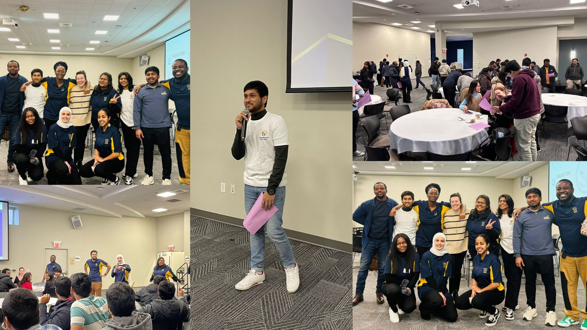
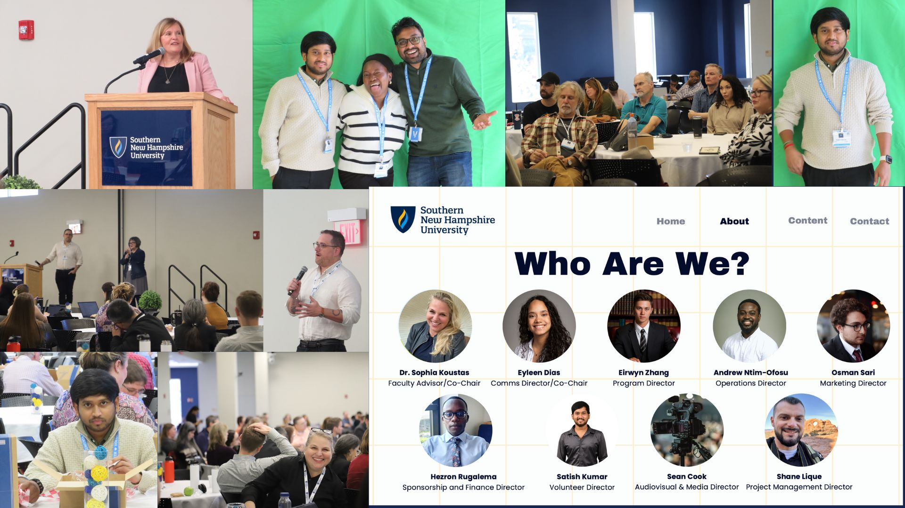

Nov, 2024
This was my first project on data exploration, where I analyzed COVID-19 data to uncover trends and patterns using techniques like summarization, visualization, and identifying key insights.

This project provides an in-depth analysis of a survey conducted with 630 data professionals from various industries and regions. The goal of the project is to uncover trends, preferences, and challenges in the data industry, offering actionable insights for aspiring data professionals, employers, and educators.Please find the Power BI Work file..
In this I have practiced SQL using office-related data to enhance my skills in data manipulation and analysis. This file contains the SQL code from my practice sessions, demonstrating various queries and operations applied to the dataset.
.

As a Graduate Advisory Board Member at Southern New Hampshire University, I facilitated events, improved student-faculty communication, and promoted engagement and inclusivity.

Volunteer Director for the annual AI Summit & AI Forum, I managed logistics, secured sponsorships, coordinated volunteers, and organized workshops and panels on AI advancements. The event was a huge success, attracting a large and engaged crowd.
Attended the 25th Social Enterprise Conference at Harvard University, where inspiring panel discussions covered topics like ethical leadership, AI's influence on education, and innovations in development finance. The pitch competition was engaging, and the event provided valuable insights into global entrepreneurship. An unforgettable experience full of motivation and impactful discussions.